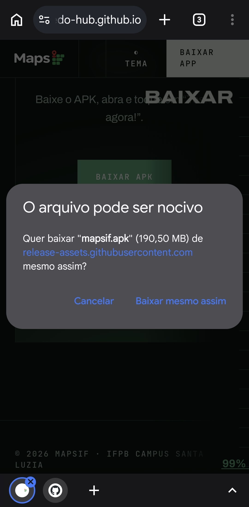
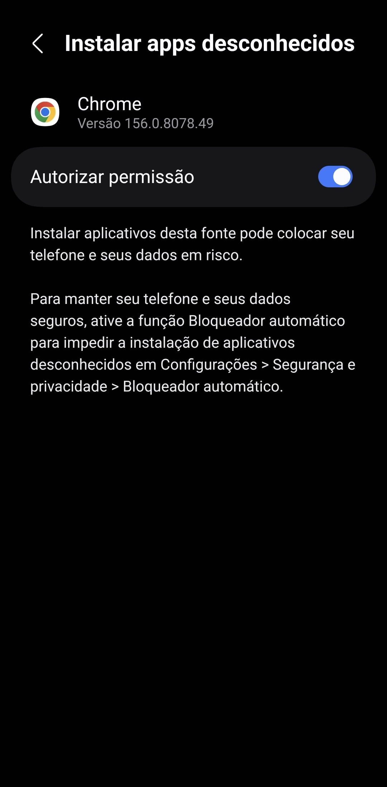
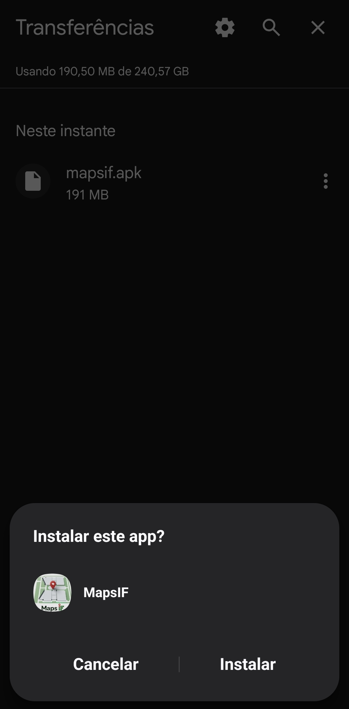
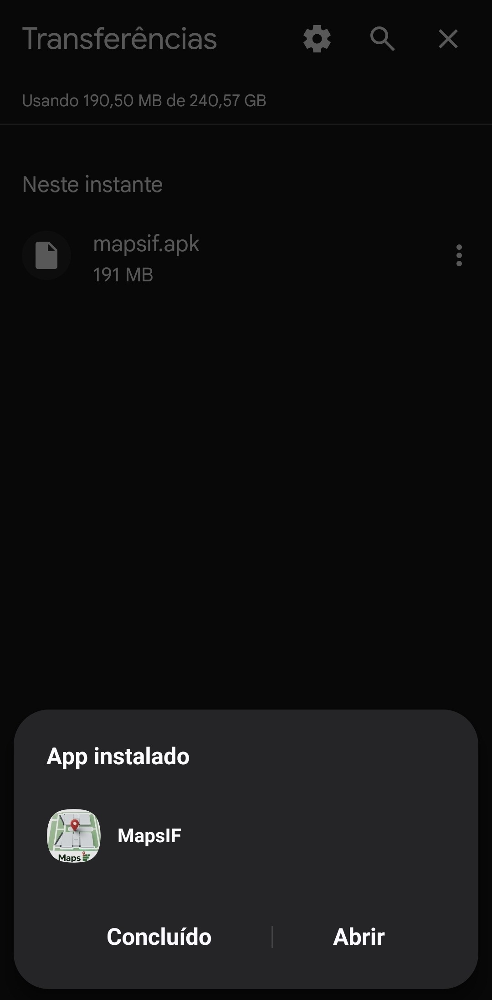

Leva menos de dois minutos. O app não está na Play Store, então a instalação é feita pelo arquivo APK.
Toque no botão abaixo pelo celular. Se o navegador avisar que o tipo de arquivo pode ser perigoso, confirme o download.

Abra o arquivo baixado. Se o Android pedir, toque em Configurações e ative a opção de permitir instalar apps desta fonte (navegador ou gerenciador de arquivos).

Volte à tela anterior e toque em Instalar. Se o Play Protect avisar sobre app não reconhecido, escolha Instalar mesmo assim.

Abra o MapsIF, escolha o bloco e o andar, toque na sala e entre no tour 360°.

Clone o repositório e gere o APK de depuração com o Gradle.
git clone https://github.com/macedo-hub/mapsif.git cd mapsif ./gradlew assembleDebug